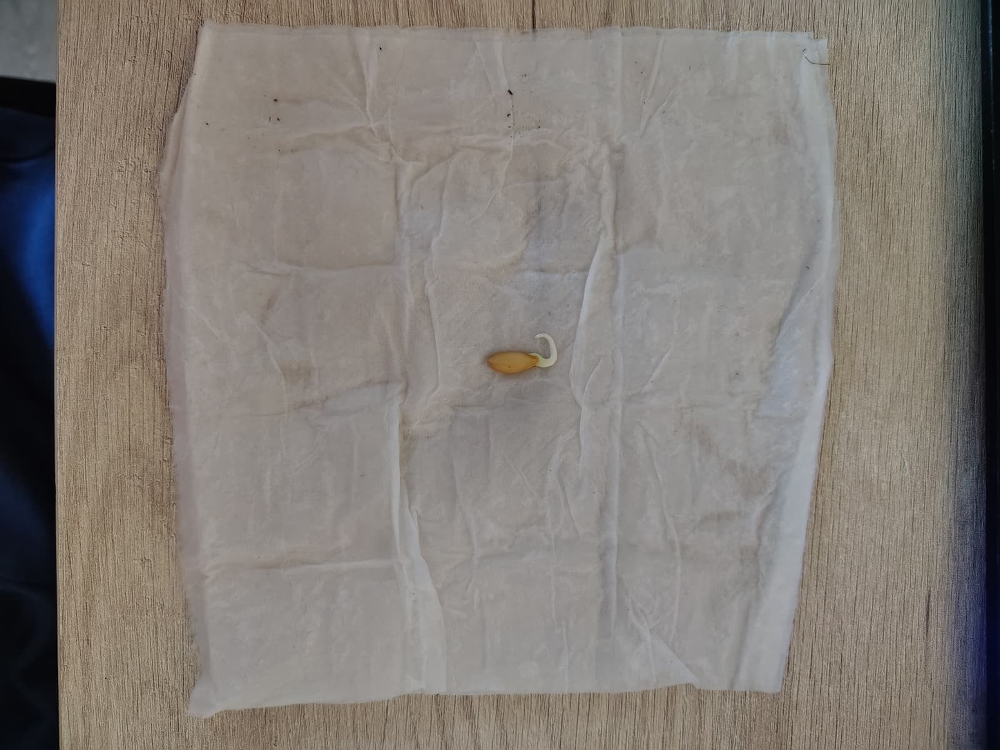
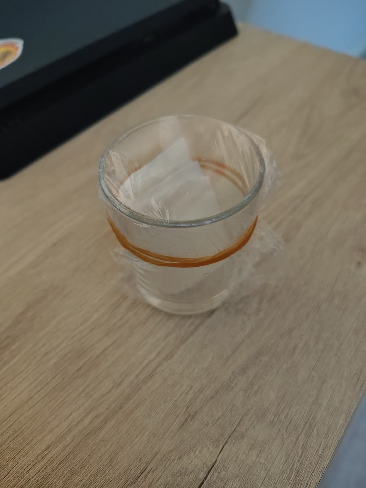
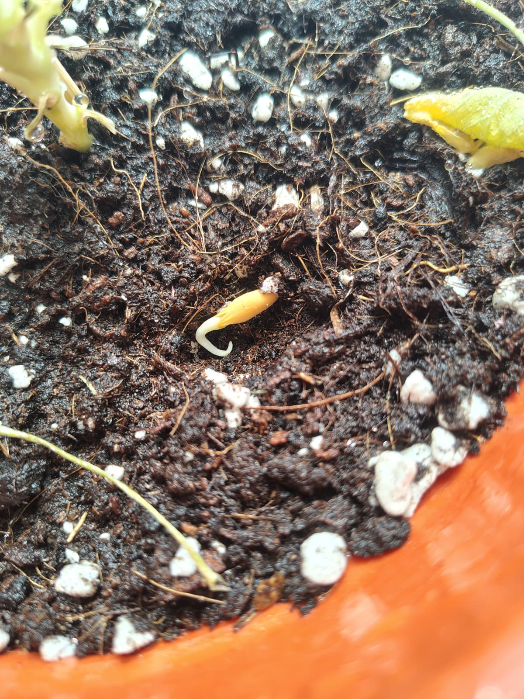

Como es verano y por lo tanto época de melones, este año me he propuesto tratar de germinar y hacer crecer uno desde una simple semilla. Lo primero es conseguir un melón (o directamente semillas) de la variedad que quieras cultivar; en mi caso, un melón piel de sapo.
1. Por qué conviene coger muchas semillas
Si compras el melón en el supermercado, la cadena de frío y todo el proceso desde que se recolecta hasta que llega a tu cocina (o incluso el propio momento de la cosecha) hacen que muchas semillas no lleguen a desarrollarse del todo, y por tanto no sean viables.
Para minimizar esa posibilidad, lo mejor es coger todas las semillas que puedas. Abre el melón como si fueras a comértelo, pero en vez de tirar las pepitas a la basura, resérvalas en un plato.
2. Limpieza y remojo
La pulpa del melón inhibe el crecimiento de la semilla (básicamente para que no germine un melón dentro de otro melón). Así que lo primero es echar las semillas en un colador y darles bien con agua hasta que queden completamente limpias.
Después, sécalas con servilletas hasta notar que ha desaparecido esa sensación resbaladiza del agua y la pulpa. Una vez secas, llena un vaso de agua y déjalas en remojo un día entero. Esto ablanda la corteza exterior y facilita que la semilla se abra y germine.
3. El método de la servilleta húmeda
Pasado el día en remojo, escurre las semillas y coge una servilleta de cocina, ábrela en dos y humedécela bien con un pulverizador (flus flus). Ojo: tiene que quedar húmeda al tacto, sin que llegue a gotear agua en ningún momento.
Coloca las semillas sobre la servilleta y ve doblándola sobre sí misma hasta formar un cuadradito, dejando una semilla entre cada capa de dobleces. Con unas 8 semillas por servilleta es suficiente para que la humedad dure y no queden muy apretadas.

La única semilla que consiguió germinar dentro de la servilleta humedecida.
Una vez dobladas todas las servilletas, necesitas un entorno sellado para que no se pierda la humedad. Un tupper funciona perfectamente; en mi caso uso un vasito pequeño tapado con papel film.

Vaso sellado para que se mantenga la humedad y la semilla pueda germinar.
4. La espera a oscuras
Deja el recipiente en un sitio sin luz directa (o totalmente a oscuras) durante 2-3 días. Pasado ese tiempo, ábrelo con cuidado y revisa las servilletas: busca semillas que hayan echado raíz o que tengan la puntita blanca.
Si alguna huele mal, se ha podrido: tírala. Las que no muestren ningún signo de germinación tampoco lo van a hacer después, así que también fuera.
5. El trasplante a tierra
Con las semillas que sí han echado raíz, ve revisándolas cada día. En cuanto la raíz alcance un tamaño similar al de la propia semilla, es el momento de plantarla en una maceta o semillero, con la raíz mirando en horizontal hacia la tierra. Ahora solo queda esperar a que asomen los primeros cotiledones.

La semilla germinada, lista para plantar en tierra.
El melón aún no ha terminado su recorrido. Iré actualizando este artículo con nuevas fotos a medida que la planta vaya cogiendo tamaño, para enseñarte si conseguimos llegar a la fruta final (¡o por si la lío en el proceso!). Vuelve en unas semanas para ver la evolución.